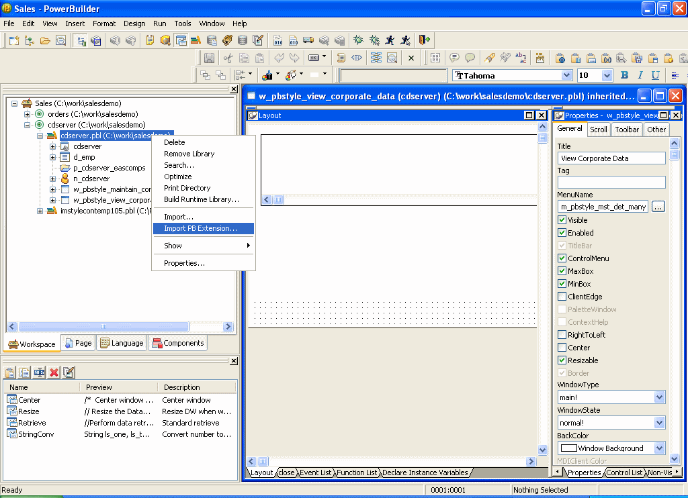
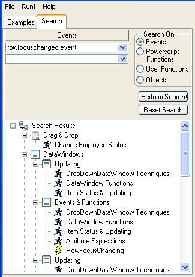
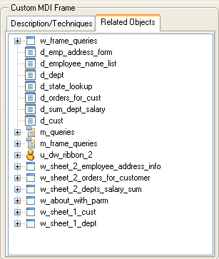

You run the Code Examples application from the development environment.
 To run the Code Examples application:
To run the Code Examples application:
Select File>New from the menu bar, select Workspace from the Workspace tab, and click OK.
Navigate to the PowerBuilder 10.5.0\Code Examples\Example App folder, type a name for the workspace, and click Save.
Select Add Target from the pop-up menu for the workspace you just created, navigate to the PowerBuilder 10.5.0\Code Examples\Example App folder, select the PB Examples target file, and click Open.
If you expand the target, you will see that the PBL that contains the application and all its supporting PBLs have been added to the workspace.
Click the Run button on the PowerBar.
When the Code Examples application opens, the left pane contains an expandable tree view listing the categories of examples available. Some examples appear in more than one category. For example, the Business Class example is listed under Inheritance and User Objects. If you are looking for examples showing how to work with a specific feature, such as DataStores or DataWindows, expand that category and look at the example names.
When you select an example in the left pane, a description of the example and the techniques it demonstrates displays on the right:

If you are looking for ways to work with a specific PowerBuilder object class or feature, you can use the categories in the Examples pane and the descriptions to locate examples. If you are looking for examples using a specific event, function, or user-defined object, use the Search pane.
 To search for a function, event, or object:
To search for a function, event, or object:
Click the Search tab in the Code Examples main window.
Select a radio button in the Search On group box.
Select the item you want in the drop-down list and click Perform Search.
The names of all the examples that use the function, event, or object you searched for display:

Once you have located an example that performs some processing you want to learn about, you can run it to examine how it works and look at the code (and copy it if you want to).
To run the highlighted example, double-click it or click Run!. You can get Help on how to use the example and what it does by clicking the Help button on the example's main window.
To see all the objects used in an example, click the Related Objects tab on the right pane and click the plus signs to expand items:

Double-click the icon for a script or function to examine it.
Running the Code Examples application and looking at the code for an example gives you a lot of information, but if you open objects in the examples in the development environment, you can examine them in more depth.
For example, you can open any object in a painter, examine the inheritance hierarchy in the Browser, and step through an example in the Debugger. You can even copy objects to your own application in the Library painter or copy code fragments to the Script view.
The libraries in the Code Examples application are organized by object type. For example, pbexamd1.pbl and pbexamd2.pbl contain DataWindow objects. This makes it easy to find the objects that are referenced as examples later in this book. If you expand the sample libraries in the List view in the Library painter, the comments tell you what each object is used for.
This part presents a collection of programming techniques you can use to take advantage of PowerBuilder object-oriented features and PowerScript® language elements, including the ClassDefinition object.